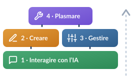

OECD / European Union (2026) · AILit Framework doi: 10.1787/65cd27d4-enEmpowering Learners for the Age of AI: An AI Literacy Framework for Primary and Secondary Education. OECD Publishing, Paris.
Sviluppato con esperti internazionali (Stanford University, INRIA, ISTE) e co-finanziato dalla Commissione europea.
Sviluppato con esperti internazionali (Stanford University, INRIA, ISTE) e co-finanziato dalla Commissione europea.
«le conoscenze tecniche, le abilità durature e gli atteggiamenti orientati al futuro necessari per prosperare in un mondo influenzato dall’IA. Consente a chi apprende di interagire con l’IA, creare con essa, gestirla e plasmarla, valutandone criticamente benefici, rischi e implicazioni etiche»

I domini si costruiscono l’uno sull’altro: Interagire è la base, Creare e Gestire procedono in parallelo, Plasmare è il culmine4 domini chiave · istruzione primaria e secondaria
01
Engage with AI
Interagire con l’IA
Comprendere e utilizzare attivamente le interfacce e i sistemi di IA.
Partecipare in modo critico e responsabile a un mondo segnato dall’IA.
02
Create with AI
Creare con l’IA
Sviluppare contenuti, soluzioni e prodotti sfruttando strumenti di IA.
L’IA come partner creativo, mantenendo l’iniziativa umana.
03
Manage AI
Gestire l’IA
Valutare rischi, dati, etica e impatto dell’uso degli algoritmi.
Dividere intenzionalmente il lavoro tra esseri umani e IA.
04
Shape AI
Plasmare l’IA
Orientare l’evoluzione tecnologica per il bene sociale e della comunità.
Migliorare i sistemi di IA perché riflettano i valori umani.